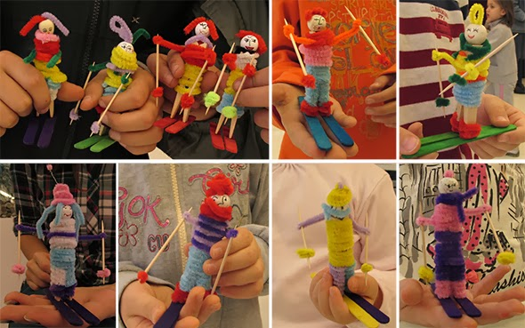
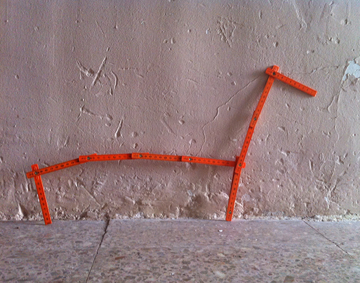
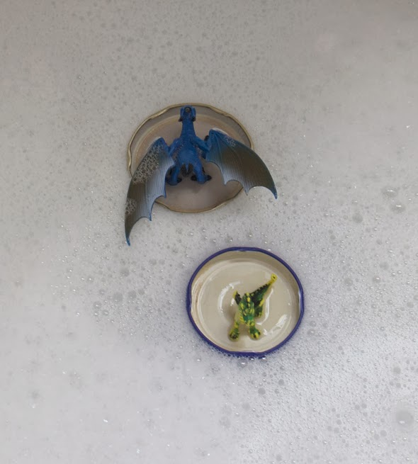

Ich weiß nicht wer lieber Boote baut, ich ... oder meine Kinder!

Ich weiß nicht wer lieber Boote baut, ich ... oder meine Kinder!


Guckt mal, was ich für tolle Arbeiten geschickt bekommen habe. (von Rossichka: The Theatre Group for Children KAMILA aus Bulgarien ) Vorbild war unser Skifahrer.
Weiterlesen →
Das beste Spielzeug, abgesehen von unserem Haus natürlich !! Ein Zollstock. Zaun für Kuscheltiere, ein Formenspiel ...
Weiterlesen →
Die Drachen baden mit den Kindern und da sie nicht schwimmen können surfen sie auf Deckel.
Weiterlesen →
. Julieta bei einer Regatta von Schilfblatt -Booten!
Weiterlesen →